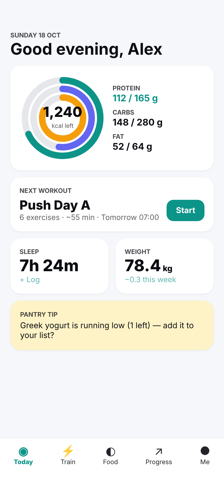
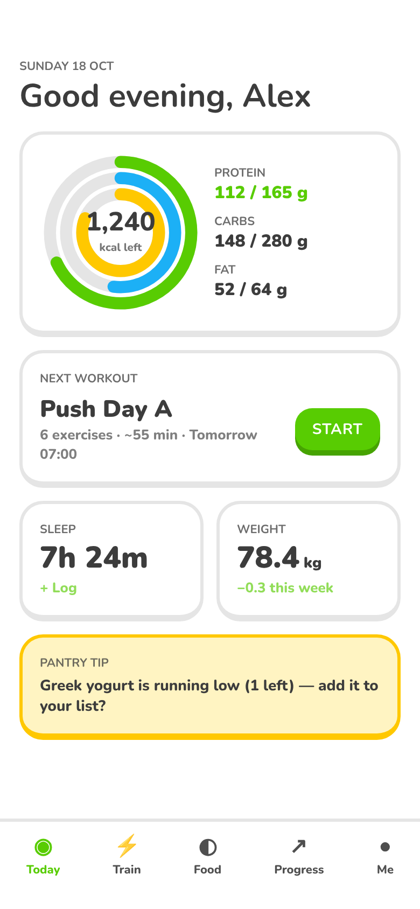
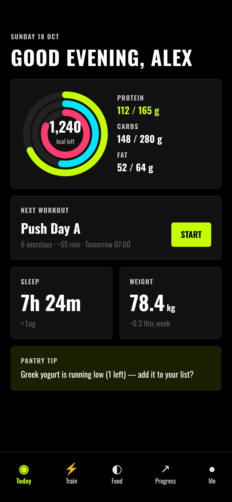
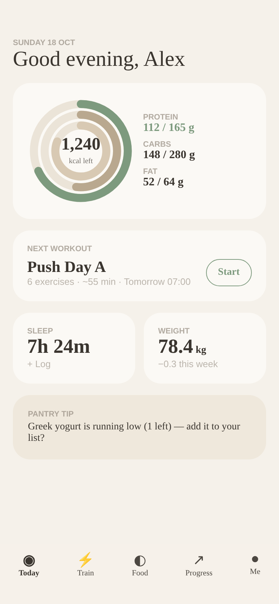
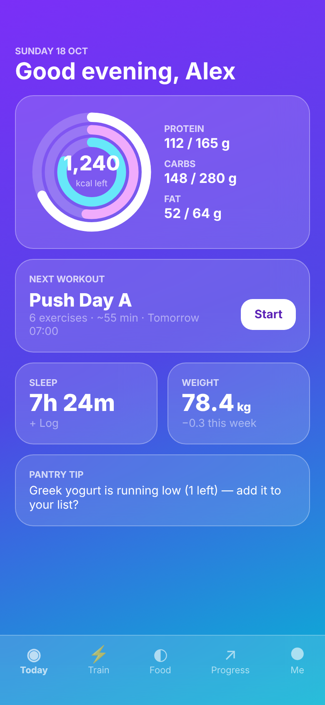
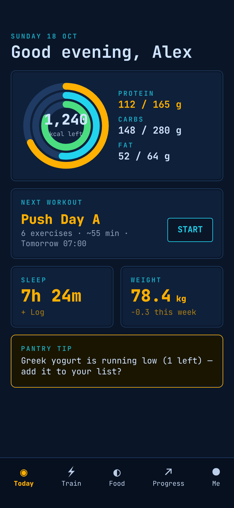

Clean v2 look: white cards, teal + indigo, system type.

Chunky rounded shapes, bright green/yellow, 3D push buttons.

Pure black, neon lime, condensed bold caps, data-forward.

Warm off-white, soft neutrals, one muted sage accent, airy.

Vivid purple→blue gradient with frosted glass cards.

Deep navy instrument panel, amber/cyan gauges, monospace readouts.